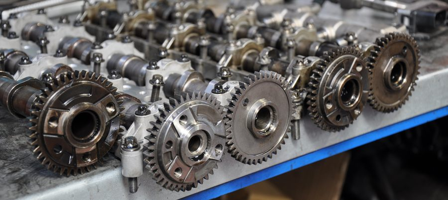

Why the 2.2 Skyactiv-D wears its exhaust cam
The exhaust camshaft opens the exhaust valves through roller rockers (finger followers) sitting on hydraulic lash adjusters. On the Skyactiv-D, Mazda added a trick to the exhaust side: when the engine is cold, the exhaust valves open slightly a second time during the intake stroke. That pulls some hot exhaust gas back into the cylinder, which helps the low-compression engine start and run cleanly from cold.
All of that depends on a good film of clean oil between the cam lobes and the rollers, and the 2.2 gives its oil a hard life. Every DPF regeneration adds extra fuel late in the combustion cycle, and some of it ends up in the sump. Short trips that keep interrupting regenerations make it worse. The oil level creeps up, the oil gets thinner, and it stops protecting the metal.
The result is wear on the exhaust cam lobes and the rockers. Once the surface starts to break up, the metal particles travel round the engine with the oil, which is why a worn exhaust camshaft and a blocked oil strainer or worn rod bearings often turn up together.

Symptoms
These are the signs our customers usually notice first. None of them proves it's the camshaft on its own, which is why we diagnose before we quote.
- Ticking from the top endA tapping or ticking noise from the top of the engine, often easiest to hear at idle.
- Rough or lumpy idleThe engine shakes or hunts at idle, sometimes worse from cold.
- Loss of powerFlat pick-up and the car doesn't pull the way it used to.
- Warning lightEngine management light, sometimes with misfire or airflow-related fault codes.
- Hard or rough startingLonger cranking or rough running for the first minutes after a cold start.
- Rising oil levelOil level going up between services, or oil that smells of diesel. That's a cause rather than a symptom, but a warning sign worth acting on.
How we diagnose it
Your car's history
We ask about servicing, oil changes, how often the DPF regenerates and the kind of driving the car does. Short trips and long oil intervals matter here.
Fault codes & live data
We read the fault codes and check live data, including DPF soot load and regeneration history, to see how hard the oil has been working.
Listen & check the oil
We pin down where the noise is coming from and check the oil level, condition and smell, and look for metal in it.
Look at the camshaft
With the cam cover off we inspect the exhaust cam lobes and rockers directly. That's the only way to know for sure, and we photograph what we find for your report.
The fix
If the camshaft is worn, we replace the exhaust camshaft together with the rockers and hydraulic lash adjusters where they're worn too. Putting a new camshaft onto worn rockers just wears the new one out. We also check the inlet camshaft while we're in there.
The engine gets fresh oil of the correct specification and a new filter. Because metal from the cam ends up in the sump, we'll tell you if the oil strainer and bearings need looking at as well.
A new camshaft in an engine that keeps diluting its oil will wear out again. So we also look at why it happened, whether that's DPF regenerations, driving pattern or oil change intervals, and tell you how to stop it coming back.
Every car gets our final checks before it goes home: a test drive, a fault code scan and a live data check.
Watch us do it
[DRAFT – YouTube video link needed for this page. If there isn't one, this section is left out.]
Questions we get asked
Can I keep driving with a worn exhaust camshaft?
We wouldn't for long. The metal coming off the cam goes round the engine with the oil and can block the oil strainer and damage the rod bearings. Catching it early is far cheaper than an engine rebuild.
Is the ticking definitely the camshaft?
Not always. Injectors and leaking injector washers can make a similar noise. That's why we diagnose before we replace anything, rather than guessing from a noise.
Do you replace just the camshaft?
We replace whatever is worn. Usually that's the exhaust camshaft plus the rockers and lash adjusters, because fitting a new cam onto worn rockers shortens its life.
Why does the Mazda 2.2 diesel get this problem?
Mostly oil. DPF regenerations can put diesel into the sump, which thins the oil and stops it protecting the cam lobes. Short trips and long service intervals make it worse.
How can I stop it happening again?
Change the oil more often than the maximum interval, use the correct specification, keep an eye on the oil level, and let the DPF finish its regenerations with a decent run now and then. We'll give you advice for your car after the repair.